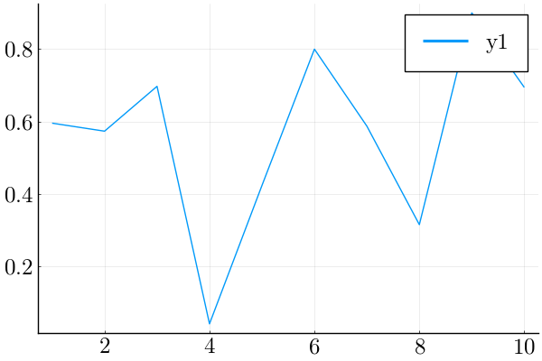

This page was generated from
source/scratch/01_classic-regression-turing.ipynb.
 or
or
Classical regression in Turing¶
Setup plotting¶
[1]:
using PyCall
font_manager = pyimport("matplotlib.font_manager")
font_manager.fontManager.addfont("/usr/share/fonts/OTF/lmroman10-regular.otf")
PyDict(pyimport("matplotlib")["rcParams"])["font.serif"] = ["Latin Modern Roman"]
# font_manager.fontManager.addfont("/usr/share/fonts/OTF/lmsans10-regular.otf")
# PyDict(pyimport("matplotlib")["rcParams"])["font.serif"] = ["Latin Modern Sans"]
[1]:
1-element Vector{String}:
"Latin Modern Roman"
[2]:
using Plots
font = Plots.font("Latin Modern Roman", 18)
# font = Plots.font("Latin Modern Sans", 18)
pyplot(titlefont=font, guidefont=font, xtickfont=font, ytickfont=font, legendfont=font)
[2]:
Plots.PyPlotBackend()
[3]:
x = 1:10; y = rand(10); # These are the plotting data
plot(x, y)
[3]:

Import libraries¶
You may need to install julia package ForwardDiff if it isn’t already installed.
julia -e 'using Pkg; Pkg.status()'
julia -e 'using Pkg; Pkg.instantiate(); Pkg.API.precompile()'
julia -e 'using Pkg; Pkg.add("ForwardDiff")'
[4]:
# Import Turing and Distributions.
using Turing, Distributions
# Import RDatasets.
using RDatasets
# Import MCMCChains, Plots, and StatPlots for visualizations and diagnostics.
using MCMCChains, Plots, StatsPlots
# Functionality for splitting and normalizing the data.
using MLDataUtils: shuffleobs, splitobs, rescale!
# Functionality for evaluating the model predictions.
using Distances
# Functionality for reading CSV files into DataFrames
using CSV
using DataFrames
# Set a seed for reproducibility.
using Random
Random.seed!(0)
# Hide the progress prompt while sampling.
# Turing.turnprogress(false);
┌ Info: Precompiling StatsPlots [f3b207a7-027a-5e70-b257-86293d7955fd]
└ @ Base loading.jl:1317
Load data¶
[9]:
# Import the "Default" dataset.
data = RDatasets.dataset("datasets", "mtcars");
# Show the first six rows of the dataset.
print(size(data))
first(data, 6)
(32, 12)
[9]:
| Model | MPG | Cyl | Disp | HP | DRat | WT | QSec | VS | |
|---|---|---|---|---|---|---|---|---|---|
| String | Float64 | Int64 | Float64 | Int64 | Float64 | Float64 | Float64 | Int64 | |
| 1 | Mazda RX4 | 21.0 | 6 | 160.0 | 110 | 3.9 | 2.62 | 16.46 | 0 |
| 2 | Mazda RX4 Wag | 21.0 | 6 | 160.0 | 110 | 3.9 | 2.875 | 17.02 | 0 |
| 3 | Datsun 710 | 22.8 | 4 | 108.0 | 93 | 3.85 | 2.32 | 18.61 | 1 |
| 4 | Hornet 4 Drive | 21.4 | 6 | 258.0 | 110 | 3.08 | 3.215 | 19.44 | 1 |
| 5 | Hornet Sportabout | 18.7 | 8 | 360.0 | 175 | 3.15 | 3.44 | 17.02 | 0 |
| 6 | Valiant | 18.1 | 6 | 225.0 | 105 | 2.76 | 3.46 | 20.22 | 1 |
Preprocess data¶
Manipulate data structure into appropriate input form¶
Extract a training and testing set from the data
[10]:
# Remove the model column.
select!(data, Not(:Model))
# Split our dataset 70%/30% into training/test sets.
trainset, testset = splitobs(shuffleobs(data), 0.7)
[10]:
(22×11 SubDataFrame
Row │ MPG Cyl Disp HP DRat WT QSec VS AM ⋯
│ Float64 Int64 Float64 Int64 Float64 Float64 Float64 Int64 Int64 ⋯
─────┼──────────────────────────────────────────────────────────────────────────
1 │ 27.3 4 79.0 66 4.08 1.935 18.9 1 1 ⋯
2 │ 21.4 6 258.0 110 3.08 3.215 19.44 1 0
3 │ 30.4 4 95.1 113 3.77 1.513 16.9 1 1
4 │ 24.4 4 146.7 62 3.69 3.19 20.0 1 0
5 │ 33.9 4 71.1 65 4.22 1.835 19.9 1 1 ⋯
6 │ 10.4 8 460.0 215 3.0 5.424 17.82 0 0
7 │ 15.5 8 318.0 150 2.76 3.52 16.87 0 0
8 │ 14.7 8 440.0 230 3.23 5.345 17.42 0 0
9 │ 22.8 4 140.8 95 3.92 3.15 22.9 1 0 ⋯
10 │ 21.0 6 160.0 110 3.9 2.62 16.46 0 1
11 │ 15.2 8 275.8 180 3.07 3.78 18.0 0 0
12 │ 13.3 8 350.0 245 3.73 3.84 15.41 0 0
13 │ 15.8 8 351.0 264 4.22 3.17 14.5 0 1 ⋯
14 │ 22.8 4 108.0 93 3.85 2.32 18.61 1 1
15 │ 21.0 6 160.0 110 3.9 2.875 17.02 0 1
16 │ 17.8 6 167.6 123 3.92 3.44 18.9 1 0
17 │ 19.2 8 400.0 175 3.08 3.845 17.05 0 0 ⋯
18 │ 30.4 4 75.7 52 4.93 1.615 18.52 1 1
19 │ 18.7 8 360.0 175 3.15 3.44 17.02 0 0
20 │ 21.5 4 120.1 97 3.7 2.465 20.01 1 0
21 │ 10.4 8 472.0 205 2.93 5.25 17.98 0 0 ⋯
22 │ 32.4 4 78.7 66 4.08 2.2 19.47 1 1
2 columns omitted, 10×11 SubDataFrame
Row │ MPG Cyl Disp HP DRat WT QSec VS AM ⋯
│ Float64 Int64 Float64 Int64 Float64 Float64 Float64 Int64 Int64 ⋯
─────┼──────────────────────────────────────────────────────────────────────────
1 │ 19.2 6 167.6 123 3.92 3.44 18.3 1 0 ⋯
2 │ 15.0 8 301.0 335 3.54 3.57 14.6 0 1
3 │ 16.4 8 275.8 180 3.07 4.07 17.4 0 0
4 │ 14.3 8 360.0 245 3.21 3.57 15.84 0 0
5 │ 21.4 4 121.0 109 4.11 2.78 18.6 1 1 ⋯
6 │ 18.1 6 225.0 105 2.76 3.46 20.22 1 0
7 │ 19.7 6 145.0 175 3.62 2.77 15.5 0 1
8 │ 15.2 8 304.0 150 3.15 3.435 17.3 0 0
9 │ 26.0 4 120.3 91 4.43 2.14 16.7 0 1 ⋯
10 │ 17.3 8 275.8 180 3.07 3.73 17.6 0 0
2 columns omitted)
Specify the outcome variable for predicton.
[11]:
target = :MPG
[11]:
10×10 Matrix{Float64}:
6.0 167.6 123.0 3.92 3.44 18.3 1.0 0.0 4.0 4.0
8.0 301.0 335.0 3.54 3.57 14.6 0.0 1.0 5.0 8.0
8.0 275.8 180.0 3.07 4.07 17.4 0.0 0.0 3.0 3.0
8.0 360.0 245.0 3.21 3.57 15.84 0.0 0.0 3.0 4.0
4.0 121.0 109.0 4.11 2.78 18.6 1.0 1.0 4.0 2.0
6.0 225.0 105.0 2.76 3.46 20.22 1.0 0.0 3.0 1.0
6.0 145.0 175.0 3.62 2.77 15.5 0.0 1.0 5.0 6.0
8.0 304.0 150.0 3.15 3.435 17.3 0.0 0.0 3.0 2.0
4.0 120.3 91.0 4.43 2.14 16.7 0.0 1.0 5.0 2.0
8.0 275.8 180.0 3.07 3.73 17.6 0.0 0.0 3.0 3.0
Convert data to matrix form.
[14]:
train = Matrix(select(trainset, Not(target)))
[14]:
22×10 Matrix{Float64}:
4.0 79.0 66.0 4.08 1.935 18.9 1.0 1.0 4.0 1.0
6.0 258.0 110.0 3.08 3.215 19.44 1.0 0.0 3.0 1.0
4.0 95.1 113.0 3.77 1.513 16.9 1.0 1.0 5.0 2.0
4.0 146.7 62.0 3.69 3.19 20.0 1.0 0.0 4.0 2.0
4.0 71.1 65.0 4.22 1.835 19.9 1.0 1.0 4.0 1.0
8.0 460.0 215.0 3.0 5.424 17.82 0.0 0.0 3.0 4.0
8.0 318.0 150.0 2.76 3.52 16.87 0.0 0.0 3.0 2.0
8.0 440.0 230.0 3.23 5.345 17.42 0.0 0.0 3.0 4.0
4.0 140.8 95.0 3.92 3.15 22.9 1.0 0.0 4.0 2.0
6.0 160.0 110.0 3.9 2.62 16.46 0.0 1.0 4.0 4.0
8.0 275.8 180.0 3.07 3.78 18.0 0.0 0.0 3.0 3.0
8.0 350.0 245.0 3.73 3.84 15.41 0.0 0.0 3.0 4.0
8.0 351.0 264.0 4.22 3.17 14.5 0.0 1.0 5.0 4.0
4.0 108.0 93.0 3.85 2.32 18.61 1.0 1.0 4.0 1.0
6.0 160.0 110.0 3.9 2.875 17.02 0.0 1.0 4.0 4.0
6.0 167.6 123.0 3.92 3.44 18.9 1.0 0.0 4.0 4.0
8.0 400.0 175.0 3.08 3.845 17.05 0.0 0.0 3.0 2.0
4.0 75.7 52.0 4.93 1.615 18.52 1.0 1.0 4.0 2.0
8.0 360.0 175.0 3.15 3.44 17.02 0.0 0.0 3.0 2.0
4.0 120.1 97.0 3.7 2.465 20.01 1.0 0.0 3.0 1.0
8.0 472.0 205.0 2.93 5.25 17.98 0.0 0.0 3.0 4.0
4.0 78.7 66.0 4.08 2.2 19.47 1.0 1.0 4.0 1.0
[15]:
test = Matrix(select(testset, Not(target)))
[15]:
10×10 Matrix{Float64}:
6.0 167.6 123.0 3.92 3.44 18.3 1.0 0.0 4.0 4.0
8.0 301.0 335.0 3.54 3.57 14.6 0.0 1.0 5.0 8.0
8.0 275.8 180.0 3.07 4.07 17.4 0.0 0.0 3.0 3.0
8.0 360.0 245.0 3.21 3.57 15.84 0.0 0.0 3.0 4.0
4.0 121.0 109.0 4.11 2.78 18.6 1.0 1.0 4.0 2.0
6.0 225.0 105.0 2.76 3.46 20.22 1.0 0.0 3.0 1.0
6.0 145.0 175.0 3.62 2.77 15.5 0.0 1.0 5.0 6.0
8.0 304.0 150.0 3.15 3.435 17.3 0.0 0.0 3.0 2.0
4.0 120.3 91.0 4.43 2.14 16.7 0.0 1.0 5.0 2.0
8.0 275.8 180.0 3.07 3.73 17.6 0.0 0.0 3.0 3.0
[13]:
train_target = trainset[:, target];
test_target = testset[:, target];
Transform data¶
Standardize the data features.
[16]:
μ, σ = rescale!(train; obsdim = 1)
[16]:
([6.0, 231.25454545454548, 136.4090909090909, 3.6459090909090914, 3.181227272727273, 18.14090909090909, 0.5, 0.4090909090909091, 3.6363636363636362, 2.5], [1.8516401995451028, 139.64166975060107, 64.88939974398129, 0.5406755834879975, 1.1276522569276897, 1.8090958254409035, 0.511766315719159, 0.5032362797401964, 0.657951694959769, 1.2630273533214136])
[17]:
train
[17]:
22×10 Matrix{Float64}:
-1.08012 -1.09032 -1.08506 … 1.17422 0.552679 -1.18762
0.0 0.191529 -0.406986 -0.81292 -0.967189 -1.18762
-1.08012 -0.975028 -0.360754 1.17422 2.07255 -0.395874
-1.08012 -0.605511 -1.14671 -0.81292 0.552679 -0.395874
-1.08012 -1.1469 -1.10047 1.17422 0.552679 -1.18762
1.08012 1.63809 1.21115 … -0.81292 -0.967189 1.18762
1.08012 0.6212 0.209447 -0.81292 -0.967189 -0.395874
1.08012 1.49487 1.44231 -0.81292 -0.967189 1.18762
-1.08012 -0.647762 -0.638149 -0.81292 0.552679 -0.395874
0.0 -0.510267 -0.406986 1.17422 0.552679 1.18762
1.08012 0.318998 0.671772 … -0.81292 -0.967189 0.395874
1.08012 0.850358 1.67348 -0.81292 -0.967189 1.18762
1.08012 0.857519 1.96628 1.17422 2.07255 1.18762
-1.08012 -0.882649 -0.66897 1.17422 0.552679 -1.18762
0.0 -0.510267 -0.406986 1.17422 0.552679 1.18762
0.0 -0.455842 -0.206645 … -0.81292 0.552679 1.18762
1.08012 1.20842 0.594718 -0.81292 -0.967189 -0.395874
-1.08012 -1.11396 -1.30081 1.17422 0.552679 -0.395874
1.08012 0.92197 0.594718 -0.81292 -0.967189 -0.395874
-1.08012 -0.795998 -0.607327 -0.81292 -0.967189 -1.18762
1.08012 1.72402 1.05704 … -0.81292 -0.967189 1.18762
-1.08012 -1.09247 -1.08506 1.17422 0.552679 -1.18762
[18]:
rescale!(test, μ, σ; obsdim = 1)
[18]:
([6.0, 231.25454545454548, 136.4090909090909, 3.6459090909090914, 3.181227272727273, 18.14090909090909, 0.5, 0.4090909090909091, 3.6363636363636362, 2.5], [1.8516401995451028, 139.64166975060107, 64.88939974398129, 0.5406755834879975, 1.1276522569276897, 1.8090958254409035, 0.511766315719159, 0.5032362797401964, 0.657951694959769, 1.2630273533214136])
[19]:
test
[19]:
10×10 Matrix{Float64}:
0.0 -0.455842 -0.206645 … -0.81292 0.552679 1.18762
1.08012 0.49946 3.06045 1.17422 2.07255 4.35462
1.08012 0.318998 0.671772 -0.81292 -0.967189 0.395874
1.08012 0.92197 1.67348 -0.81292 -0.967189 1.18762
-1.08012 -0.789553 -0.422397 1.17422 0.552679 -0.395874
0.0 -0.04479 -0.48404 … -0.81292 -0.967189 -1.18762
0.0 -0.617685 0.594718 1.17422 2.07255 2.77112
1.08012 0.520944 0.209447 -0.81292 -0.967189 -0.395874
-1.08012 -0.794566 -0.699792 1.17422 2.07255 -0.395874
1.08012 0.318998 0.671772 -0.81292 -0.967189 0.395874
Standardize outcome data as well.
[20]:
μtarget, σtarget = rescale!(train_target; obsdim = 1);
rescale!(test_target, μtarget, σtarget; obsdim = 1);
Define model¶
One linear model to predict the outcome variable MPG from the other variables in the data set is a so-called fixed effects model given by
\[\mathrm{MPG}_i \sim \mathcal{N}(\alpha + \beta^T \mathbf{X}_i, \sigma^2)\]
Note here that the slope parameters \(\beta^T\) and the intercept \(\alpha\) are fixed across all data.
[ ]: